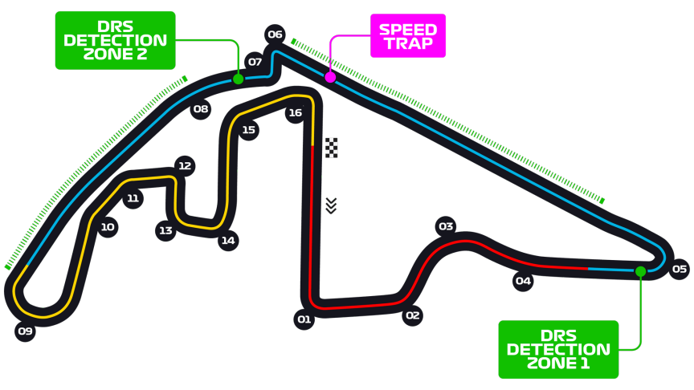

Grand Prix d'Abou Dabi
Informations
Nom du circuit
Yas Marina Circuit
Lieu
Abou Dabi (Emirats Arabes Unis)
Nombre de tours
58
Longueur du circuit
5.281 km
Distance de course
306.183 km
Dernier vainqueur
Max Verstappen
Classement nombres de victoires sur ce circuit
5 victoires - Lewis Hamilton
3 victoires - Sebastian Vettel
3 victoires - Max Verstappen
Le saviez-vous ?
Habituellement, le dernier rendez-vous de l’année pour les pilotes, le Grand Prix a très souvent été le théâtre de moments décisifs pour le titre mondial. Le dernier fait en date n’est autre que celui de 2021 avec le dernier tour mythique et controversé opposant Lewis Hamilton et Max Verstappen. Le premier chassait un 8ème sacre mondial, le second, son premier. Au final, c’est Max Verstappen qui s’est imposé. Ce n’est qu’un rapide résumé, je vous invite fortement à vous renseigner un peu plus sur cette course mythique.
Pour l’édition 2018, les spectateurs ont eu le droit à des donuts. Non non pas ceux auxquels vous pensez... ! À l’occasion du « départ en retraite » de Fernando Alonso à l’issue de ce Grand Prix, lui-même accompagné de Lewis Hamilton et Sebastian Vettel, ont offert aux spectateurs des donuts d’adieu en Formule 1 sur la grille de départ ! Un spectacle inoubliable.
En 2010, c’est une bataille à 4 pilotes pour le championnat qui attend les fans de Formule 1. Sebastian Vettel, Mark Webber, Fernando Alonso et Lewis Hamilton sont encore en lice pour le sacre mondial. Vettel alors partit en pole position domine toute la course et est aidé par une grosse erreur de stratégie de Webber et Alonso qui se sont arrêté trop tôt et sont sorti derrière Petrov qui a déjà changé ses pneus et ira au bout de la course avec ! Sebastian Vettel prendra donc sa 5ème victoire et par la même occasion son titre de champion du monde.